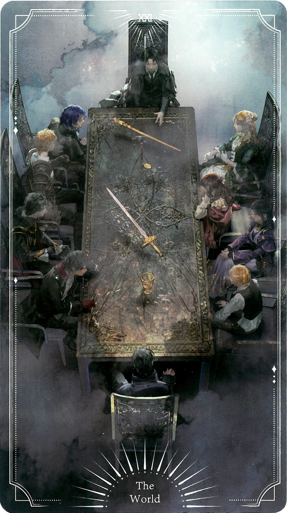

This page includes spoilers from across the novels.
The Tarot Club is a secret organization founded on June 28, 1349 in the palace above The Gray Fog. It was created by Klein Moretti, known as The Fool, and joined at its founding by Audrey Hall and Alger Wilson. Its headquarters is at Sefirah Castle. Each member takes a tarot card as a codename, and those codenames hold powerful fate over themselves. What began as a private gathering of low-Sequence Beyonders grew into a hidden organization capable of moving the world.

As of 1352, all Major Arcana members were Sequence 4 Saints. As of 1359, all Major Arcana members were Sequence 3 or higher and held Sealed Artifacts of all grades, with several Minor Arcana members serving under them.
With the Apocalypse in 1360, The Fool and The Chariot both became Great Old Ones. The Chariot left the organization, and The Empress joined in his place. Every Major Arcana member became an Angel.
The Tarot Club started as a gathering of three: Klein Moretti, Audrey Hall, and Alger Wilson. It expanded to 9 members by 1352 and 12 members by 1360. Each member had a different organization backing them, which let the club gather resources from many sources and advance quickly.
It first entered the public sphere with the 1349 death of Lanevus, which left tarot cards scattered across the scene. In Spring 1351 the orthodox churches officially recognized it as a powerful secret organization that worships The Fool.
The club controls six Cards of Blasphemy: Black Emperor, Tyrant, Red Priest, The Fool, Demoness, and Mother. Mr. Fool has also read the Second Blasphemy Slate.
All exchanges have to be fair and equal. Members are not allowed to reveal the existence of the gathering, or the identity of other members. Only The Fool can accept new official members, who hold Major Arcana cards. Those official members can only invite peripheral members, who hold Minor Arcana cards.
The Tarot Club holds a meeting every Monday at 3:00 in the afternoon, Backlund time, at Sefirah Castle. A gray fog hides each member's appearance, so they do not know one another's faces or identities. Klein translates anything spoken as long as he understands both the speaker's and the listener's languages. The meetings are used to share and sell information, Beyonder ingredients, and artifacts. Members can sacrifice whatever they wish to exchange to The Fool, who grants it to the receiver. Klein also uses the meetings to collect Roselle's Diary entries.
After The Fool's sleep in 1352, the members gather on the first Monday afternoon of every month with no convener. "Small Meetings" for Major Arcana members only run monthly until the end of The Fool's dream. In 1359, The Fool partially awakens and again formally conducts the gatherings as convener.
The Tarot Club follows a tradition of spreading tarot cards at the scene after completing a task, with its representative card placed prominently. Before the official Beyonders recognized them, the club made itself known in six public cases. The first two were undertaken by Klein Moretti alone.
As of 1358, newspapers and mystical gatherings openly discuss the more active Major Arcana cards.
Before The Fool entered his slumber, he entrusted a long-term commission to every member of the Tarot Club. Most of the commissions were completed before the Apocalypse.
The common commission for all members except The Chariot, The Empress, and Temperance was to spread The Fool's name widely without clashing with the orthodox churches, and to record that The World is The Fool's Blessed in the Holy Bible. The reward was the convenience they had enjoyed in the past, the responses they received, and help with their future prayers.
| Member | Commission | Reward |
|---|---|---|
| The Hermit (Cattleya) | Gather information on the Hidden Sage's awakening and state, and watch over her Mother and Moon pathway crew members. | A wish. |
| The Sun (Derrick Berg) | Protect the New City of Silver and New Moon City, protect the Rorsted Archipelago, expand the Church of the Fool, and spread the faith. | To become a Blessed. |
| The Magician (Fors Wall) | Protect the Abraham Family from the temptation of the Cosmos, gather more information on the Fourth Epoch, and write biographies of The World's different identities. | The Fool's blessing when advancing to Sequence 2 Planeswalker. |
| The Moon (Emlyn White) | Gather the blessings given by the Primordial Moon in the Rose School of Thought, form a pharmaceutical company, and spread The Fool's name through it. | A wish. |
| Judgement (Xio Derecha) | Investigate the three Sequence 1 Beyonder characteristics and the Uniqueness of the Red Priest Pathway, and confirm the state of the Primordial Demoness. | The Sequence 4 Imperative Mage formula, characteristic, and ingredients, paid in advance. |
| The Star (Leonard Mitchell) | Gather the blessings given by the Mother Tree of Desire in the Rose School of Thought, share The World's stories in songs and poetry, and raise his Sequence. | A wish. |
| Justice (Audrey Hall) | Assist Judgement in the Red Priest investigation, and raise her Sequence so The World can awaken. | The Sequence 3 Dream Weaver characteristic, ingredients, and formula, paid in advance. |
| The Hanged Man (Alger Wilson) | Bring the Book of Calamity to the Western Continent. | The Sea God Scepter, paid in advance. |
In Book Two, The Magician aids Justice and Judgement in investigating the Iron and Blood Cross Order, with Seven of Wands lending her support. Judgement covertly investigates the Iron and Blood Cross Order and the Demoness Sect, assisted by Two of Cups and Seven of Cups, while Justice aids her with Four of Swords. The revelation of Salinger's Blood Banner, the whereabouts of Vermonda Sauron, and the restoration of Red Angel Medici in Trier let Justice and Judgement fulfill the majority of their commission.